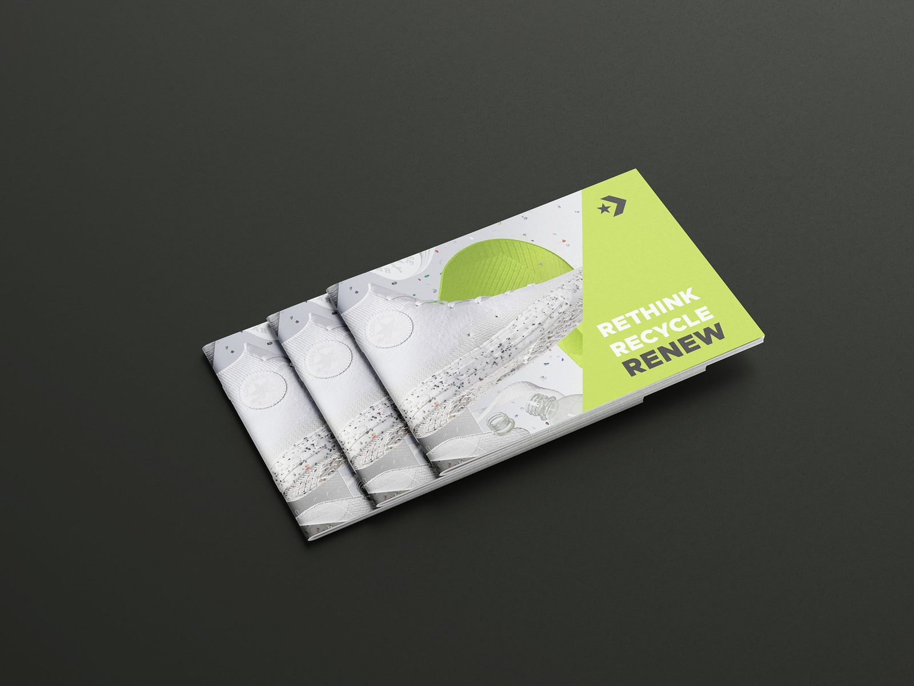
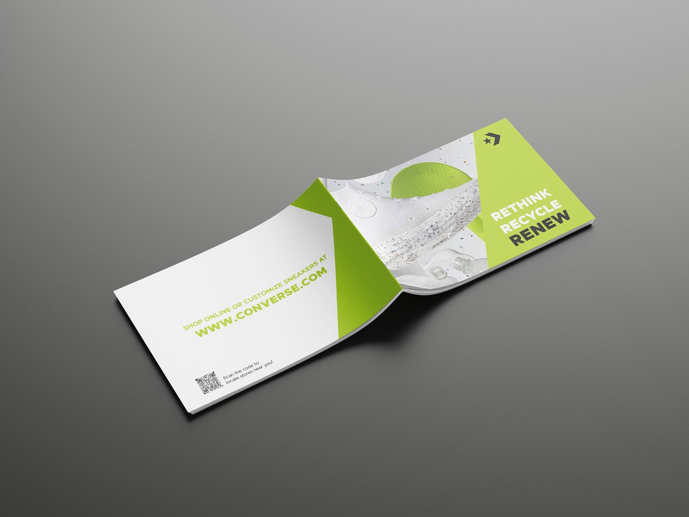
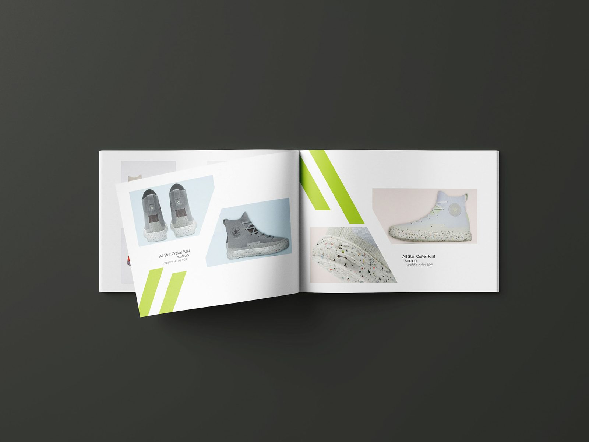
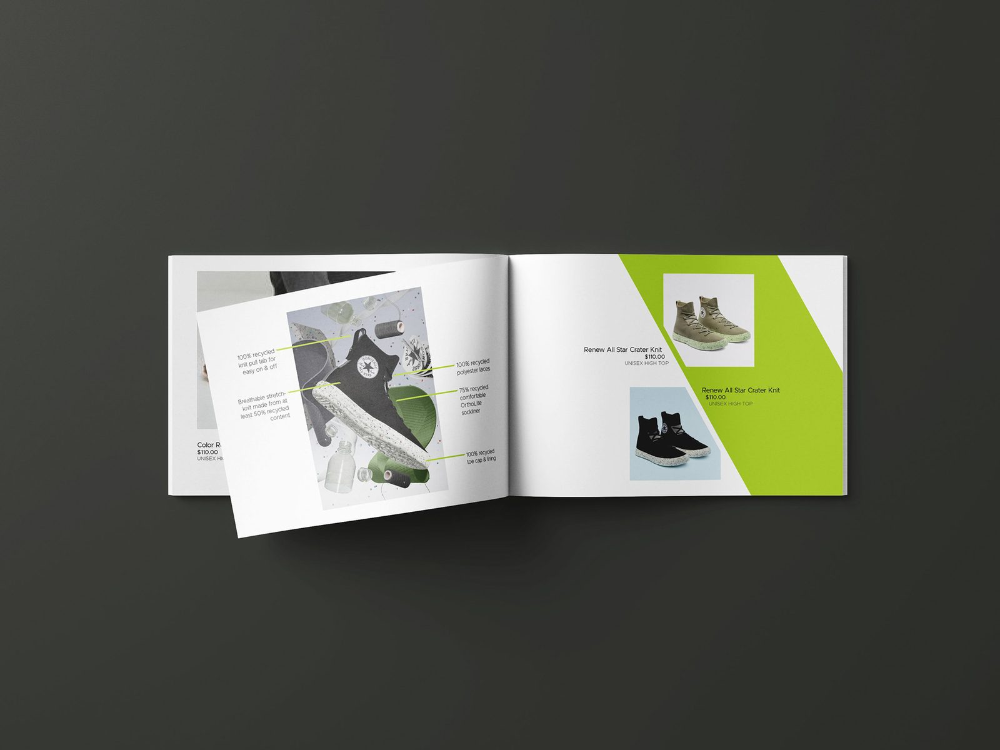
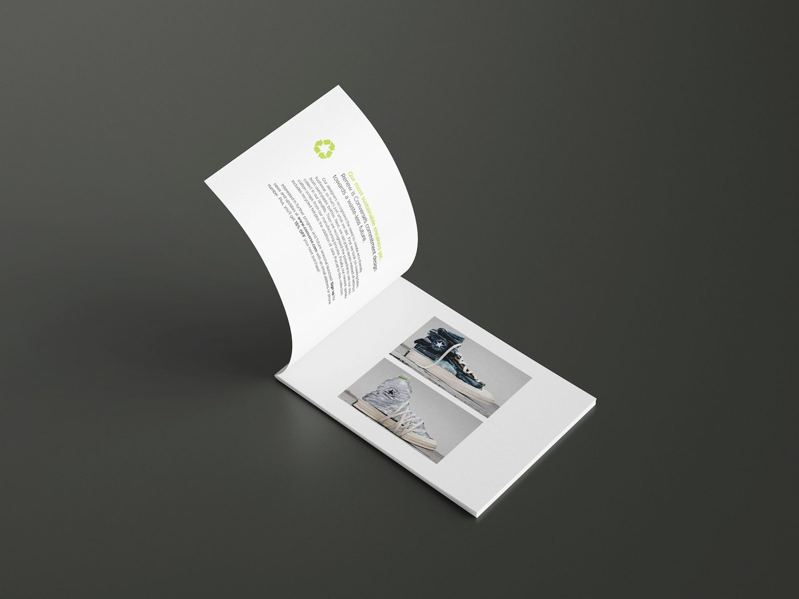
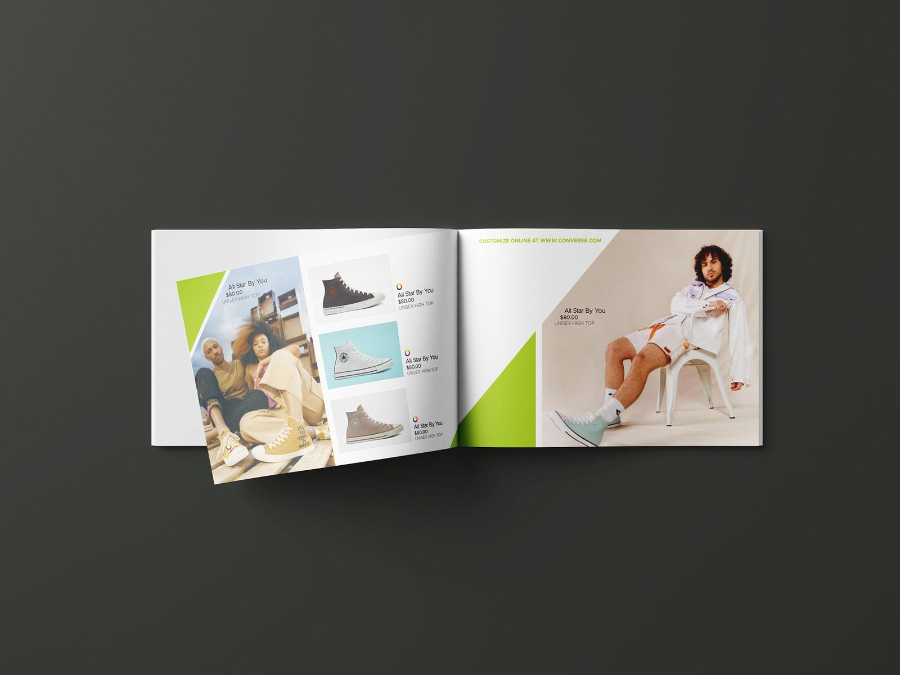

Catalog / Print Layout
Rethink, Reuse, Renew — a clean catalog for Converse's sustainable knit line.

- Role
- Layout & Design
- Discipline
- Print / Catalog
- Format
- Landscape brochure
- Tools
- InDesign · Illustrator
The brief
Converse's sustainable All Star knit line needed a product catalog as clean and considered as the shoes themselves — communicating an eco-conscious message without ever feeling preachy.
My approach
I built a calm, grid-led layout with generous white space, a fresh lime-green accent system, and angled graphic elements that echo the brand's energy. Product photography leads every spread, while the “Rethink, Reuse, Renew” message threads through as a quiet narrative.






The outcome
A cohesive, production-ready catalog system that scales across spreads and keeps the focus exactly where it belongs — on the product.